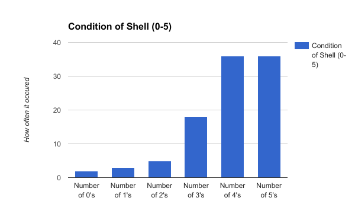
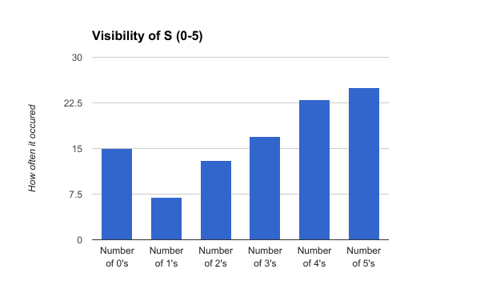
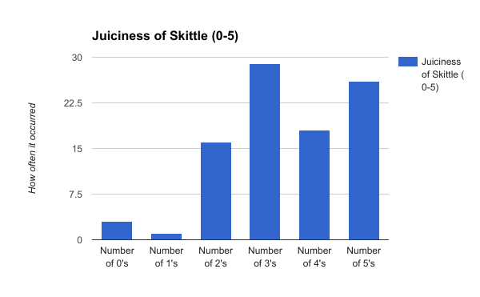

To collect the data we tried one skittle at a time until we had tasted 100 skittles and their qualities. Then we judged how the skittles tasted on a rating system 1-5. The qualities we judged were the visibility of the S, the condition of the shell and the juicness of the skittle. Here is a snippet of our data collection that we took.
Some patterns we found were the averages of visiblity of the S, condition of the shell and the juiciness of the skittle these are the averages: Visiblity: 2.9, Condition: 3.9, Juiciness 3.6. We then found how often each ranking occurred. For the visibility of the S we found there were: 15 zeros, 7 ones, 13 twos, 17 threes, 23 fours and 25 fives. For the condition of the shell there were: 2 zeros, 3 ones, 5 twos, 18 threes, 36 fours and 36 fives. Finally, for the juicness there were: 3 zeros, 1 one, 16 twos, 29 threes, 18 fours and 27 fives.
  